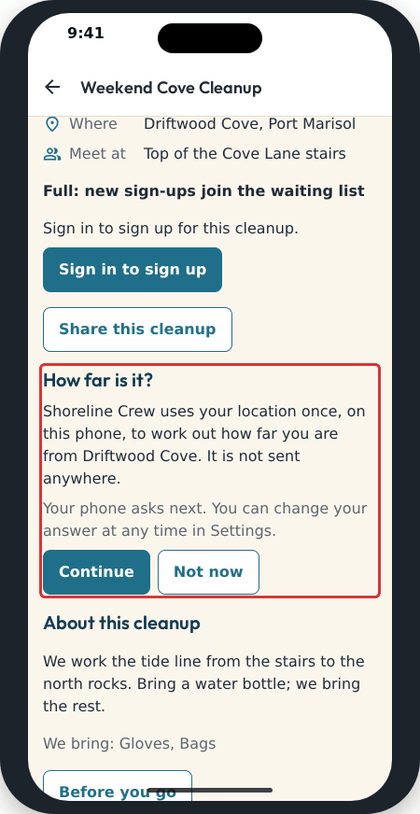
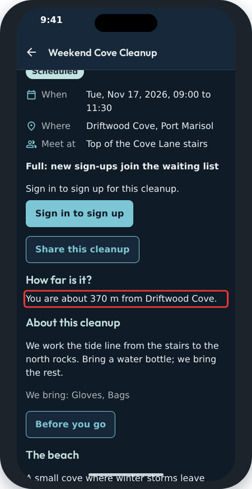

🔐 Lesson 6.1: Permissions Done Right
A phone keeps the things people care about most (where they are, what their camera sees, their photos, their attention) behind doors only they can open. Every device feature in this module starts at one of those doors, and how you knock decides whether it ever opens. Today you learn to knock well: at the right moment, with a reason, ready for a no. Shoreline Crew gets a small, reusable permission step and its first real use, a "How far is it?" panel that asks for the volunteer's location only when they want their distance.
🎯 Learning Objectives
By the end of this lesson, you will be able to:
- Describe the life of a permission on an iPhone, an Android phone and the web preview: not asked, granted, denied, and blocked (plus the one-time and approximate answers)
- Ask at the moment a feature needs it, explain why first, and handle "no" and "don't ask again" without trapping the person
- Use Expo's permission model: the permission Hooks,
get…PermissionsAsyncversusrequest…PermissionsAsync, thePermissionResponseobject, and what the Hooks leave to you - Write the words on the phone's question with a config plugin in
app.json, ask only for what you use, and check what reaches the native projects - Say what Expo Go, a development build and the web preview each show you about permissions
📦 Code for this lesson
Starting code: lesson-20-start.zip · Finished code: lesson-20-end.zip. Each folder has a README with the commands to run it.
In This Lesson
👋 Welcome: Knocking Before You Enter
If you did last lesson's "Before the Next Lesson" task, you noticed two kinds of apps. Some greet you with a stack of questions before you have seen a single screen: location, notifications, contacts, Bluetooth. Others wait until you tap "Scan a code" and only then ask for the camera. You probably said yes more easily to the second kind, and you probably remember which apps you refused out of plain irritation.
That difference is the whole lesson. The phone's permission question is the same dialog in both apps; what changes is when it appears, whether the app said why first, and what happens after a no. By the end of the lesson:
- You can predict the phone's behavior for every answer, on iPhone and on Android, including the one that never lets you ask again.
- Shoreline Crew has a permission step it can reuse: a Hook that turns any Expo permission into one of five steps, and a component that explains, asks, takes a no, and points to Settings. Lessons 6.2 to 6.4 put the camera and notifications through the same step.
- The cleanup screen asks for location at the right moment, with its own words on the question, and shows how far the volunteer is from the beach.
Why it matters for your work: permissions are where an app's first impression, its store review and its users' trust meet. A rejected App Store build for a vague purpose string, a one-star review that says "wants my location for no reason", a feature nobody can use because they tapped "Don't Allow" on day one: each one is a permission handled carelessly. Teams notice the developer who gets this right the first time.
🌱 The phone has the last word
Much of today happens in dialogs your code does not draw and cannot screenshot, and some of it you can only see on a real phone. That can feel like working blind. It is not: the rules are documented, the code paths are few, and the web preview lets you try every one of them on your computer first. When the phone surprises you, that is information, not failure. Write it down and adjust.
🚦 The Life of a Permission
On the web, a page asks the browser, and the browser asks the person. On a phone, the app asks the operating system, and the operating system asks the person, in its own dialog, with its own buttons. Your app never sees the dialog. It only gets the answer, and it can ask the question only while the phone allows it.
Every permission an app can ask for (location, camera, photos, microphone, notifications and more) moves through the same few states:
The arrows are where the platforms differ, and they are worth knowing by heart:
| State | iPhone | Android phone | Web preview (Chrome) |
|---|---|---|---|
| Not asked yet | The first request shows the question | The first request shows the question | The first request shows the browser's bubble |
| Granted | "Allow While Using App", or "Allow Once" (for this session only) | "While using the app", or "Only this time" | "Allow on every visit", or "Allow this time" |
| Denied, may ask again | Never: one "Don't Allow" and the question is gone | After the first "Don't allow", the app may ask once more | Not reported (see below) |
| Blocked | After "Don't Allow" | After the second "Don't allow" | After "Never allow" (or "Block") |
| Changed later | Settings, under the app's name | Settings, App info, Permissions | Site settings (the icon left of the address) |
Three more facts shape how you write the code:
- Answers come in shades. Location can be granted as approximate instead of precise: iPhone has a Precise switch in its question, and Android 12 and later offer "Approximate" and "Precise" side by side. A one-time answer ("Allow Once", "Only this time") lasts until the app is no longer in use, and then the phone asks again next time. The app sees "granted" either way.
- Answers change without you. People change them in Settings whenever they like, and Android can reset the permissions of an app that has not been used for months. "It was granted last week" means nothing today: check before every use.
- Not everything needs a permission. Network requests, the app's own storage (Module 5), the share sheet (Lesson 4.4) and haptics do not. The photo picker you will use in Lesson 6.2 generally does not either; the camera does. Notifications do, on iPhone and on recent Android versions (Lesson 6.4).
📱 On your phone
The iPhone and Android behaviors in this section come from Apple's, Google's and Expo's documentation, and could not be run here. The dialogs' exact wording changes between versions of iOS and Android; the states do not. You will meet each state on your own phone in Step 6.
🚪 The Right Moment, the Reason, and the No
💡 Mental model: the farm gate on the way to the beach
Some of Shoreline Crew's beaches are reached across private land. The crew does not knock on every farmhouse door when the van leaves the depot. It knocks when it reaches the gate, says in one sentence why ("We're collecting litter from the cove; we'll close the gate behind us"), and if the answer is no, takes the long way round without arguing. If the gate is padlocked, nobody climbs it: the crew calls the office that holds the key. The gate is the permission, the sentence is your explanation, the long way round is your app working without it, and the office is the Settings app.
Five rules follow from it:
- Ask in context. Ask when the person does the thing that needs it: presses Show my distance, Take a photo, Remind me. At that moment the question answers itself. At launch it is a stranger at the door asking for keys.
- Explain first, in a sentence or two. Say what you need, what it is for, and what you will not do with it. The button under your explanation leads straight to the phone's question, so call it Continue, not "Allow": the real "Allow" is the phone's. A Not now that asks nothing is the polite way out.
- A no is an answer. Everything that does not need the permission keeps working, and where you can, offer another way (Lesson 6.3's check-in needs only a code, never the location; Lesson 6.2 can pick a photo instead of taking one). Ask again only when the person asks for the feature again, never on a timer.
- When only Settings can help, say so. Explain plainly that the phone will not ask again, offer a button that opens your app's page in Settings, and notice when the person comes back.
- Check before every use. The answer can change in Settings at any time.
Why so careful? On an iPhone, a "Don't Allow" given at launch to a question nobody understood is final, as far as your app is concerned: the only way back is a trip through Settings that most people will never make. Apple's guidelines also ask that a screen shown before the system question does not imitate it and leads on to it (check the current App Review Guidelines before you ship), which is exactly what a Continue button does.
🧩 Permissions in Expo Modules
On the web, each browser API has its own permission style. Expo gives every module the same three tools, so once you know one module you know them all. For location (expo-location):
import * as Location from 'expo-location';
// Plain functions, anywhere
const now = await Location.getForegroundPermissionsAsync(); // reads the answer, never asks
const after = await Location.requestForegroundPermissionsAsync(); // asks, if the phone still may
// The Hook, in a component: [the answer so far (null at first), ask, read again]
const [response, requestPermission, getPermission] = Location.useForegroundPermissions();request… shows the phone's question only while the state is "not asked yet" (or Android's one extra chance); otherwise it returns the current answer at once, silently. Other modules follow the same pattern: ImagePicker.useCameraPermissions() in Lesson 6.2, the camera module's useCameraPermissions(), and so on. Every one of them answers with the same shape, defined in expo-modules-core and exported by expo:
// What every get…PermissionsAsync and request…PermissionsAsync resolves to (shortened)
type PermissionResponse = {
status: PermissionStatus; // 'granted' | 'undetermined' | 'denied'
granted: boolean; // status === 'granted', for convenience
canAskAgain: boolean; // false: only the Settings app can change the answer
expires: PermissionExpiration; // 'never' | number
};Modules add their own extras to it: location's answer carries ios.accuracy ('full' or 'reduced') and android.accuracy ('fine', 'coarse' or 'none'), which is how an app learns it got the approximate answer. The five states from the diagram fall out of three fields:
| The answer | Our step | What the volunteer sees |
|---|---|---|
null (the Hook is still reading) | 'checking' | A short "Checking…" |
granted: true | 'granted' | The feature |
status: 'undetermined' | 'not-asked' | The explanation, Continue, Not now |
status: 'denied', canAskAgain: true | 'denied' | "That is fine", the reason again, Ask me again |
status: 'denied', canAskAgain: false | 'blocked' | "Your phone will not ask again", Open Settings |
Reading the Hook's source in node_modules/expo-modules-core/src/PermissionsHook.ts (about 80 lines) shows what it does not do, and that is where your code comes in:
- It never asks by itself unless you pass
{ request: true }, which would ask the moment the component appears. Leave it off: asking is a button's job. - It does not read the answer again when the app returns from the Settings app. It reads once, when the component mounts, and after each request. A volunteer who turns location on in Settings and comes back would still see "blocked". Lesson 5.2's focus manager already knows when the app comes back to the foreground, so your Hook will listen to it.
- On the web,
canAskAgainis alwaystrue. expo-location's web code (build/ExpoLocation.web.js) returns it for every answer, but a browser never asks again after "Block": a second request comes back "denied" at once. In the web preview, your Hook will treat a no as blocked.
📝 The Words on the Question: Config Plugins
Part of a permission lives outside your JavaScript, in the app's native projects. An iPhone app must declare a purpose string for each kind of access in its Info.plist, and the phone prints that string in its question (Apple's documentation: an app that asks without one is stopped by the system). An Android app must list each permission in its AndroidManifest.xml; Android writes its own question and has no purpose string.
You have never edited either file, because an Expo project does not keep them: npx expo prebuild, which runs inside every development and store build (Module 9), generates the native projects from app.json. Packages change the generated files through config plugins, the plugins list you met when npx expo install expo-secure-store printed "Added config plugin" in Lesson 4.3.
expo-location behaves differently, and it is worth seeing why. Installed with no entry in plugins, its plugin still runs: it is on Expo's list of plugins applied automatically. Running npx expo prebuild --no-install in a copy of the project (never in your project folder; it creates ios/ and android/) and reading the two files gave:
Expected output
android/app/src/main/AndroidManifest.xml:
<uses-permission android:name="android.permission.ACCESS_COARSE_LOCATION"/>
<uses-permission android:name="android.permission.ACCESS_FINE_LOCATION"/>
<uses-permission android:name="android.permission.INTERNET"/>
<uses-permission android:name="android.permission.READ_EXTERNAL_STORAGE" android:maxSdkVersion="32" tools:replace="android:maxSdkVersion"/>
<uses-permission android:name="android.permission.SYSTEM_ALERT_WINDOW"/>
<uses-permission android:name="android.permission.VIBRATE"/>
<uses-permission android:name="android.permission.WRITE_EXTERNAL_STORAGE" android:maxSdkVersion="32" tools:replace="android:maxSdkVersion"/>
ios/ShorelineCrew/Info.plist:
NSFaceIDUsageDescription: Allow $(PRODUCT_NAME) to access your Face ID biometric data.
NSLocationAlwaysAndWhenInUseUsageDescription: Allow $(PRODUCT_NAME) to access your location
NSLocationAlwaysUsageDescription: Allow $(PRODUCT_NAME) to access your location
NSLocationTemporaryUsageDescriptionDictionary: {'ExpoLocationFullAccuracy': 'Allow $(PRODUCT_NAME) to access your precise location'}
NSLocationWhenInUseUsageDescription: Allow $(PRODUCT_NAME) to access your location
NSMotionUsageDescription: Allow $(PRODUCT_NAME) to detect your current motion activityThe two location lines in the manifest are what Android needs: coarse (approximate) and fine (precise) location, so that Android 12 and later can offer both. The iPhone side has a problem, though: five location and motion strings, all in the plugin's default words ("Allow $(PRODUCT_NAME) to access your location"), including "Always" (background) location and motion activity that Shoreline Crew never uses. Vague words make people say no, and app reviewers ask about access an app declares but cannot justify.
So the project lists the plugin with options: its own sentence for the one string it needs, and false for the four it does not. Measured with the same prebuild:
Expected output
android/app/src/main/AndroidManifest.xml:
<uses-permission android:name="android.permission.ACCESS_COARSE_LOCATION"/>
<uses-permission android:name="android.permission.ACCESS_FINE_LOCATION"/>
<uses-permission android:name="android.permission.INTERNET"/>
<uses-permission android:name="android.permission.READ_EXTERNAL_STORAGE" android:maxSdkVersion="32" tools:replace="android:maxSdkVersion"/>
<uses-permission android:name="android.permission.SYSTEM_ALERT_WINDOW"/>
<uses-permission android:name="android.permission.VIBRATE"/>
<uses-permission android:name="android.permission.WRITE_EXTERNAL_STORAGE" android:maxSdkVersion="32" tools:replace="android:maxSdkVersion"/>
ios/ShorelineCrew/Info.plist:
NSFaceIDUsageDescription: Allow $(PRODUCT_NAME) to access your Face ID biometric data.
NSLocationWhenInUseUsageDescription: Shoreline Crew uses your location to show how far you are from a cleanup's meeting point.Only the "while using" string is left, in Shoreline Crew's words. (NSFaceIDUsageDescription comes from Lesson 4.3's expo-secure-store plugin; Exercise 2 deals with it.) A good purpose string says what the app uses and what for, specifically and honestly: "Shoreline Crew uses your location to show how far you are from a cleanup's meeting point." beats "This app needs your location to work."
🧪 Expo Go, Development Builds and the Web Preview
Here is the catch with everything in the last section: Expo Go does not use it. Expo Go is one app, installed from the store, with its own Info.plist, its own manifest and its own purpose strings, which it uses for every project you open in it. Your plugins settings shape the app you build yourself, a development build (Lesson 9.2) or a store build. What each one shows you:
| Expo Go | Development build (Lesson 9.2) | Web preview | |
|---|---|---|---|
| Who asks | Expo Go | Shoreline Crew | The browser, for the site |
| Words on the iPhone question | Expo Go's | Your app.json string | The browser's own |
A change to plugins | No effect | Needs a new build | No effect |
| Who the answer belongs to | Expo Go: shared by every project you open in it | This app only | That address (localhost:8081) in that browser |
| Back to "not asked yet" | Reinstall Expo Go (Android: "Ask every time" in Settings also works) | Reinstall the app | Site settings, Reset permission |
So Expo Go is excellent for the flow (your explanation, the moment, the faces after each answer) and blind to the words. Check your purpose string in a development build before you ship (Module 9). And because Expo Go remembers your answers across projects, a "first time" test on a phone where you allowed location for some other Expo project will skip straight to "granted"; the Step 6 notes say how to reset it.
🧩 Version note: no more expo-permissions
Older tutorials import a single expo-permissions package (Permissions.askAsync(Permissions.LOCATION)). It was removed years ago; each module now carries its own functions and Hook, as above. If you copy an old answer from the internet and it imports expo-permissions, translate it to the module's own request…PermissionsAsync.
⚠️ Common Mistakes
Each mistake below was made on purpose in a copy of the finished project and measured in the web preview, unless it says otherwise.
⚠️ Asking as the app starts
It is tempting to "get permissions out of the way" in the root layout:
// Don't: asks before anyone knows why
useEffect(() => {
void Location.requestForegroundPermissionsAsync();
}, []);Measured: the app made a location request at startup, on the Cleanups list, before anyone pressed anything. On an iPhone, that is the phone's question over a list of cleanups with no reason in sight, and a "Don't Allow" given there is final: when the volunteer later wants their distance, the panel can only point to Settings. Ask from the button that needs the answer.
⚠️ Reading the position with no permission step
Calling Location.getCurrentPositionAsync() straight away "works" when the permission happens to be granted. Measured without the gate: pressing Show my distance made the browser ask, the answer was no, and the panel said "Could not find where you are. Check that location is turned on for your phone, then try again." That message is wrong (location is on; the app is not allowed) and Try again can never fix it. On Android, expo-location rejects with "Not authorized to use location services" (read in its Android code; not run here). Know the permission step before you reach for the feature.
⚠️ Passing the Hook instead of its answer
usePermission takes what an Expo Hook returns. Forget the parentheses and TypeScript stops you:
Expected output
src/components/DistancePanel.tsx:43:34 - error TS2345: Argument of type '(options?: PermissionHookOptions<object> | undefined) => [LocationPermissionResponse | null, () => Promise<LocationPermissionResponse>, () => Promise<...>]' is not assignable to parameter of type 'PermissionHookResult'.
43 const location = usePermission(Location.useForegroundPermissions);
~~~~~~~~~~~~~~~~~~~~~~~~~~~~~~~~~
src/components/DistancePanel.tsx:43:34
43 const location = usePermission(Location.useForegroundPermissions);
~~~~~~~~~~~~~~~~~~~~~~~~~~~~~~~~~
Did you mean to call this expression?
Found 1 error in src/components/DistancePanel.tsx:43Read it from the bottom: "Did you mean to call this expression?" is the whole answer. The long type in the first line is the Hook itself (a function that takes options and returns the three-item tuple); PermissionHookResult is the tuple. Write usePermission(Location.useForegroundPermissions()).
⚠️ Never reading the answer again
Without the focus subscription in usePermission, the panel shows the answer it read when it appeared, forever. Measured: location was blocked, then allowed (in the web preview: the browser's site setting, then coming back to the tab). With the subscription, the distance appeared with no press; without it, the panel still said "Shoreline Crew is not allowed to use your location", and only a reload helped. On a phone this is the volunteer who did everything right in Settings and comes back to an app that still says no.
⚠️ Trusting canAskAgain in the web preview
expo-location's web code answers canAskAgain: true even after a no, and a browser that was told "Block" never asks again. Without the web rule in permissionStep, the web preview showed the "denied" face with Ask me again; measured, each press made one more request that came back no, and nothing on the screen changed. A button that does nothing teaches people to stop pressing your buttons. When a platform's answer cannot be trusted, say so in one line of code and a comment, as the Hook does.
🛠️ Project: Location, Asked Politely
You install expo-location and give it Shoreline Crew's words, build the permission Hook and the gate component that every device feature in this module will use, then add a How far is it? panel to the cleanup screen and try every answer, first in the web preview and then on your phone. Work in shoreline-crew, with shoreline-api running in a second terminal.
Step 1: Install expo-location and write its words (10 min)
Stop Metro with Ctrl+C (also Ctrl+C on a Mac), then:
npx expo install expo-locationExpected output
env: load .env.local
env: export EXPO_PUBLIC_API_URL
› Installing 1 SDK 58.0.0 compatible native module using npm
> npm install
added 1 package, and audited 812 packages in 3s
167 packages are looking for funding
run `npm fund` for details
8 moderate severity vulnerabilities
To address issues that do not require attention, run:
npm audit fix
To address all issues (including breaking changes), run:
npm audit fix --force
Run `npm audit` for details."1 SDK 58.0.0 compatible native module": Expo picked the version that matches SDK 58 (~58.0.22). Notice what is missing compared with Lesson 4.3's expo-secure-store: no "Added config plugin" line, and app.json is unchanged. As Config Plugins showed, expo-location's plugin runs anyway, with default words. Give it yours: in app.json, add an entry at the end of plugins (and a comma after "expo-sqlite"):
"expo-secure-store",
- "expo-sqlite"
+ "expo-sqlite",
+ [
+ "expo-location",
+ {
+ "locationWhenInUsePermission": "Shoreline Crew uses your location to show how far you are from a cleanup's meeting point.",
+ "locationAlwaysAndWhenInUsePermission": false,
+ "locationAlwaysPermission": false,
+ "motionUsagePermission": false,
+ "locationFullAccuracyPermission": false
+ }
+ ]
],locationWhenInUsePermissionis the purpose string an iPhone shows in its question (in a development or store build; Expo Go shows its own).- The four
falsevalues remove what Shoreline Crew does not use: "Always" location (two strings), motion activity, and the request for temporary precise location. Ask only for what you use, and say so in the app's files too. - Android needs nothing here: the plugin adds coarse and fine location to the manifest either way.
expo-location is in Expo Go already, so no new build is needed to follow this lesson. The app.json change shapes your own builds from Module 9 on.
Step 2: One permission, as a step (15 min)
Create src/hooks/usePermission.ts. It works with any Expo permission, not only location:
import { focusManager } from '@tanstack/react-query';
import type { PermissionResponse } from 'expo';
import { useEffect } from 'react';
import { Platform } from 'react-native';
/**
* What every Expo permission Hook returns (Location.useForegroundPermissions,
* ImagePicker.useCameraPermissions, ...): the answer so far (null until it has been read),
* a function that asks the person, and one that only reads the answer again.
*/
export type PermissionHookResult = [
PermissionResponse | null,
() => Promise<PermissionResponse>,
() => Promise<PermissionResponse>,
];
/**
* Where the app stands with one permission:
* 'checking' the answer is being read (nobody is asked)
* 'not-asked' the phone has never asked: explain, then ask
* 'denied' the answer was no, and the phone may ask again
* 'blocked' the answer was no, and only the Settings app can change it
* 'granted' yes
*/
export type PermissionStep = 'checking' | 'not-asked' | 'denied' | 'blocked' | 'granted';
export function permissionStep(response: PermissionResponse | null): PermissionStep {
if (response === null) {
return 'checking';
}
if (response.granted) {
return 'granted';
}
if (response.status === 'undetermined') {
return 'not-asked';
}
// The web preview's answers always say canAskAgain: true, but a browser never asks again after
// a "Block": treat a no there as blocked
if (!response.canAskAgain || Platform.OS === 'web') {
return 'blocked';
}
return 'denied';
}
export type Permission = {
step: PermissionStep;
ask: () => Promise<PermissionResponse>;
check: () => Promise<PermissionResponse>;
};
/**
* One permission, as a step. Pass it an Expo permission Hook's result:
* usePermission(Location.useForegroundPermissions()). The answer is read again each time the app
* comes back to the foreground, so a change made in the Settings app shows up at once.
*/
export function usePermission([response, ask, check]: PermissionHookResult): Permission {
useEffect(
() =>
// The focus manager from Lesson 5.2: AppState on a phone, the browser tab on the web
focusManager.subscribe((focused) => {
if (focused) {
void check();
}
}),
[check],
);
return { step: permissionStep(response), ask, check };
}PermissionHookResultis the tuple every Expo permission Hook returns. Typing the parameter this way means any module's Hook fits, because each module's response type extendsPermissionResponse.permissionStepis a plain function, the table from Permissions in Expo Modules in code, with the web rule in one commented line. The screens never look atstatusorcanAskAgainagain: they ask "which step?".- The effect subscribes to TanStack Query's
focusManager, the same "back in the foreground" signal Lesson 5.5's queue uses (AppState on a phone, the browser tab on the web).focusManager.subscribereturns its own unsubscribe function, which the arrow returns as the effect's cleanup. - The return value keeps only what screens need: the step,
ask(the Hook's request function) andcheck(its read function).
Step 3: The gate: explain, ask, take the no (15 min)
Create src/components/PermissionGate.tsx, one face per step:
import * as Linking from 'expo-linking';
import { type ReactNode, useState } from 'react';
import { StyleSheet, View } from 'react-native';
import { AppText } from '@/components/AppText';
import { Button } from '@/components/Button';
import { LoadingView } from '@/components/LoadingView';
import type { Permission } from '@/hooks/usePermission';
import { spacing } from '@/theme/spacing';
type PermissionGateProps = {
permission: Permission; // from usePermission()
what: string; // what the app asks for, in words: "your location"
why: string; // what it is for, said before the phone asks
onNotNow?: () => void; // a way out that asks nothing
children: ReactNode; // the feature, shown once the answer is yes
};
// Explain, then ask; take a no gracefully; point to Settings when only Settings can help.
// The feature inside renders only after a yes.
export function PermissionGate({ permission, what, why, onNotNow, children }: PermissionGateProps) {
// Set when there is no Settings app to open (the web preview)
const [noSettings, setNoSettings] = useState(false);
async function openSettings() {
try {
await Linking.openSettings(); // this app's page in the phone's Settings
} catch {
setNoSettings(true);
}
}
const notNow = onNotNow && <Button label="Not now" onPress={onNotNow} />;
switch (permission.step) {
case 'checking':
return <LoadingView label="Checking…" />;
case 'granted':
return children;
case 'not-asked':
return (
<View style={styles.box}>
<AppText>{why}</AppText>
<AppText variant="muted">
Your phone asks next. You can change your answer at any time in Settings.
</AppText>
<View style={styles.actions}>
<Button label="Continue" variant="primary" onPress={() => permission.ask()} />
{notNow}
</View>
</View>
);
case 'denied':
return (
<View style={styles.box}>
<AppText accessibilityLiveRegion="polite">
Shoreline Crew does not have {what}, and that is fine: everything else works without it.
</AppText>
<AppText variant="muted">{why}</AppText>
<View style={styles.actions}>
<Button label="Ask me again" variant="primary" onPress={() => permission.ask()} />
{notNow}
</View>
</View>
);
case 'blocked':
return (
<View style={styles.box}>
<AppText accessibilityLiveRegion="polite">
Shoreline Crew is not allowed to use {what}. Your phone will not ask again: you can turn
it on in Settings, then come back here.
</AppText>
{noSettings && (
<AppText variant="muted" accessibilityLiveRegion="polite">
There is no Settings app here. In a browser, allow it in the site settings (the icon
at the left of the address bar), then press Check again.
</AppText>
)}
<View style={styles.actions}>
{noSettings ? (
<Button label="Check again" variant="primary" onPress={() => permission.check()} />
) : (
<Button label="Open Settings" variant="primary" onPress={openSettings} />
)}
{notNow}
</View>
</View>
);
}
}
const styles = StyleSheet.create({
box: {
gap: spacing.sm,
},
actions: {
flexDirection: 'row',
flexWrap: 'wrap',
gap: spacing.sm,
},
});childrenis the feature, and it renders only on'granted'. The component that reads the position is not even mounted before a yes, so it cannot ask by accident.whatandwhyare the screen's words; the gate's own sentences fit any permission. Lesson 6.2 passes "your camera" and its reason, and nothing else changes.- The 'not-asked' face is the explanation: the reason, a line saying the phone asks next, Continue and Not now. The 'denied' face is Android's extra chance; the 'blocked' face is the padlocked gate.
Linking.openSettings()(expo-linking, as in Lesson 4.4) opens your app's page in the Settings app. In the web preview it throws (there is no Settings app), and the face says where a browser keeps the switch instead, with Check again: the same "try, then fall back" shape as Lesson 4.4's share button.accessibilityLiveRegionon the denied and blocked sentences: when a face changes after the phone's question, TalkBack reads the new sentence without the volunteer hunting for it.
Step 4: How far is it? (15 min)
First, the arithmetic. Create src/utils/distance.ts:
/** A point on the map, in degrees (a Site and a phone position both have these) */
export type Coordinates = { latitude: number; longitude: number };
const EARTH_RADIUS_KM = 6371;
const toRadians = (degrees: number) => (degrees * Math.PI) / 180;
/** The straight-line distance between two points, in kilometers (the haversine formula) */
export function distanceKm(from: Coordinates, to: Coordinates): number {
const dLat = toRadians(to.latitude - from.latitude);
const dLon = toRadians(to.longitude - from.longitude);
const a =
Math.sin(dLat / 2) ** 2 +
Math.cos(toRadians(from.latitude)) * Math.cos(toRadians(to.latitude)) * Math.sin(dLon / 2) ** 2;
return 2 * EARTH_RADIUS_KM * Math.asin(Math.sqrt(a));
}
/** "about 350 m", "about 3.2 km", "about 48 km" */
export function formatDistance(km: number): string {
if (km < 1) {
return `about ${Math.max(10, Math.round(km * 100) * 10)} m`;
}
return `about ${km < 10 ? km.toFixed(1) : Math.round(km)} km`;
}The haversine formula gives the distance along the Earth's surface between two latitude and longitude pairs, in a straight line, not by road. Every Site from shoreline-api has a latitude and a longitude, and so does a position from the phone, which is why both fit Coordinates. Then the panel, src/components/DistancePanel.tsx:
import { useQuery } from '@tanstack/react-query';
import * as Location from 'expo-location';
import { useState } from 'react';
import { StyleSheet, View } from 'react-native';
import type { Site } from '@/api/types';
import { AppText } from '@/components/AppText';
import { Button } from '@/components/Button';
import { ErrorView } from '@/components/ErrorView';
import { LoadingView } from '@/components/LoadingView';
import { PermissionGate } from '@/components/PermissionGate';
import { usePermission } from '@/hooks/usePermission';
import { spacing } from '@/theme/spacing';
import { distanceKm, formatDistance } from '@/utils/distance';
type DistancePanelProps = {
site: Site;
};
// "How far is it?" on a cleanup's screen. Nothing asks for the location until the volunteer
// presses Show my distance: that press is the moment the question makes sense.
export function DistancePanel({ site }: DistancePanelProps) {
const [wanted, setWanted] = useState(false);
return (
<View style={styles.panel}>
<AppText variant="heading" accessibilityRole="header">
How far is it?
</AppText>
{wanted ? (
<DistanceFromHere site={site} onNotNow={() => setWanted(false)} />
) : (
<>
<AppText variant="muted">See how far you are from {site.name}, in a straight line.</AppText>
<Button label="Show my distance" onPress={() => setWanted(true)} />
</>
)}
</View>
);
}
// Mounted only after the press: the permission Hook reads the answer here, and asks nobody
function DistanceFromHere({ site, onNotNow }: { site: Site; onNotNow: () => void }) {
const location = usePermission(Location.useForegroundPermissions());
return (
<PermissionGate
permission={location}
what="your location"
why={`Shoreline Crew uses your location once, on this phone, to work out how far you are from ${site.name}. It is not sent anywhere.`}
onNotNow={onNotNow}
>
<Distance site={site} />
</PermissionGate>
);
}
// Only rendered after a yes: read where the phone is, once, and compare
function Distance({ site }: { site: Site }) {
const here = useQuery({
queryKey: ['position'],
queryFn: () => Location.getCurrentPositionAsync({ accuracy: Location.Accuracy.Balanced }),
networkMode: 'always', // the phone finds itself without the internet
staleTime: 60_000, // a minute-old position is good enough for "how far"
retry: false,
});
if (here.isPending) {
return <LoadingView label="Finding where you are…" />;
}
if (here.isError) {
return (
<ErrorView
message="Could not find where you are. Check that location is turned on for your phone, then try again."
onRetry={() => here.refetch()}
/>
);
}
const km = distanceKm(here.data.coords, site);
return (
<AppText accessibilityLiveRegion="polite">
You are {formatDistance(km)} from {site.name}.
</AppText>
);
}
const styles = StyleSheet.create({
panel: {
gap: spacing.sm,
},
});- Three components, three moments.
DistancePanelwaits for the press.DistanceFromHereexists only after it, soLocation.useForegroundPermissions()reads the answer then (reading never asks).Distanceexists only after a yes. - The position is a query, set up like Lesson 5.3's logbook query:
networkMode: 'always'(finding the phone needs no internet) and astaleTime.retry: falseis new: trying again at once rarely helps a phone that cannot find itself, and Try again is one press away.Accuracy.Balancedis about a hundred meters, plenty for "how far", and kinder to the battery thanHigh. - The reason is specific and honest: once, on this phone, for this distance, never sent. That is what the code does; keep the two in step if the code ever changes.
Step 5: Put it on the cleanup screen and try it in the web preview (15 min)
In src/app/cleanups/[id].tsx, import the panel and place it between the share button and About this cleanup:
import { Detail } from '@/components/Detail';
+import { DistancePanel } from '@/components/DistancePanel';
import { EmptyState } from '@/components/EmptyState';
// ...
)}
+ {/* Asks for the location only when the volunteer wants the distance */}
+ <DistancePanel site={site} />
<AppText variant="heading" accessibilityRole="header">Start Metro (npx expo start), press w, and open Weekend Cove Cleanup. Scroll to How far is it? and press Show my distance:

Press Continue. Chrome shows its own bubble under the address bar (its buttons are along the lines of "Allow while visiting the site", "Allow this time" and "Never allow"; the wording depends on Chrome's version). Allow it, and the panel shows your distance from the cove, which from your desk may be a very large number. To pretend you are on the beach, open the developer tools, the ⋮ menu, More tools, Sensors, and set a custom location near the cove (latitude 36.942, longitude -122.0225), then reload the page (expo-location's web code accepts a remembered position, so a reload makes it ask the browser afresh) and press Show my distance again:

Now the no. Click the icon at the left of the address bar, find Location and choose Reset permission (or set it to ask), reload, press Show my distance, Continue, and this time Never allow. The panel switches to the blocked face. Press Open Settings:

Turn location back on in the same site settings and press Check again: the distance appears. Also try Not now: the panel goes back to Show my distance, and nothing was asked. Each face in this step was also measured in headless Chromium (which answers no without showing a bubble), including the return to the tab: after allowing location and coming back, the distance appeared with no button pressed.
Step 6: The real questions on your phone, then check and commit (15 min)
Open the app in Expo Go (shoreline-api running --host and .env.local on your computer's network address, as in Lesson 5.1) and go to a cleanup. If you have ever allowed location for another project in Expo Go, reset it first, as below.
- The first question. Press Show my distance, read the explanation, press Continue. The phone's own question appears, naming Expo Go (not Shoreline Crew), with your options. Allow "while using the app": the distance appears.
- A no from Settings, and the way back. Leave the app and turn location off for Expo Go (iPhone: Settings, Expo Go, Location, Never; Android: Settings, Apps, Expo Go, Permissions, Location, Don't allow). Come back to the app and press Show my distance: the blocked face. (An iPhone restarts an app whose permission was turned off in Settings, so on iPhone the app may open fresh; on Android, a panel that was already on screen switches to the blocked face by itself, because the focus subscription reads the new answer.) Press Open Settings, allow location, come back: the distance returns.
- Android's second chance. On Android, reset Expo Go's location permission ("Ask every time"), press Continue and choose Don't allow: the "denied" face offers Ask me again. Say no once more and the blocked face appears: Android stops asking. On iPhone, the first "Don't Allow" goes straight to blocked.
📱 On your phone
The phone's questions, the Settings paths and the "ask once / ask twice" behavior come from Apple's, Google's and Expo's documentation and could not be run here; menu names differ a little between versions and phone makers. If a step does not match, note what your phone did in your journal: the code handles every answer the same way whatever the menus are called.
Then the checks:
npx tsc --noEmitnpx expo lintExpected output
env: load .env.local
env: export EXPO_PUBLIC_API_URLtsc prints nothing, and expo lint only the two env: lines. Commit your work.
🧭 For your own app
For your final project, list every permission your app could need. For each one, write down: the button or moment that needs it, your one-sentence reason (the same idea as your purpose string), what the app does after a no, and whether you can drop it entirely (a picker instead of the camera, a typed address instead of location). The best permission question is the one you never have to ask.
✅ Project Completion Checklist
- ☐ expo-location installed with
npx expo install;app.jsonlists its plugin with Shoreline Crew's purpose string andfalsefor the strings it does not use - ☐
src/hooks/usePermission.tsturns any Expo permission Hook's answer into a step and reads it again when the app returns to the foreground - ☐
src/components/PermissionGate.tsxexplains before asking, takes a no with a way to ask again (Android), and points to Settings when blocked - ☐ The cleanup screen's How far is it? panel asks only after Show my distance and shows the distance after a yes
- ☐ You saw every face in the web preview and the real questions in Expo Go on your phone
- ☐ tsc and expo lint are clean, and the work is committed
🏋️ Hands-on Exercises
Optional, but recommended: each one takes five to fifteen minutes. Undo code changes afterwards; the next lesson starts from the project as Step 6 left it.
🏋️ Exercise 1: Predict the face
Without running anything, say which face of the How far is it? panel appears after Show my distance (and, where it applies, Continue):
- An iPhone that answered "Don't Allow" to Expo Go's location question last month.
- An Android phone, first time ever; the volunteer taps "Don't allow" once.
- The same Android phone, after a second "Don't allow".
- The web preview in Chrome, after "Never allow".
- An iPhone where the volunteer chose "Allow Once" yesterday and has not opened the app since.
💡 Hint
Find each case in the platform table in The Life of a Permission, then turn the answer into a step with the table in Permissions in Expo Modules. Remember the web rule.
✅ Solution
(1) Blocked, straight after the press: the Hook reads "denied" with canAskAgain: false, and Continue never appears. (2) Denied, with Ask me again: Android allows one more question. (3) Blocked, with Open Settings. (4) Blocked, and Open Settings turns into the site-settings note with Check again (measured). (5) The explanation with Continue: a one-time answer ends when the app is no longer in use, so the phone asks again. Cases 1, 2, 3 and 5 are from the platforms' documentation; check them on your phone.
🏋️ Exercise 2: Ask only for what you use, again
The measured Info.plist in Config Plugins still declares NSFaceIDUsageDescription, from Lesson 4.3's expo-secure-store plugin. Shoreline Crew keeps its token in SecureStore but never asks for Face ID. Remove the string through the plugin's options, the way you did for location.
💡 Hint
A plugin with options is a two-item array: the name, then an object. Look for an option named after Face ID in node_modules/expo-secure-store/plugin/src/withSecureStore.ts; its type says whether false is allowed.
✅ Solution
In app.json, replace "expo-secure-store" in plugins with:
["expo-secure-store", { "faceIDPermission": false }]The option is typed string | false. Measured with npx expo config --type introspect (see Exercise 3), the iPhone's usage strings are then only:
Expected output
NSLocationWhenInUseUsageDescription: "Shoreline Crew uses your location to show how far you are from a cleanup's meeting point.",If Shoreline Crew ever protects a SecureStore item with Face ID (requireAuthentication), it needs a Face ID purpose string again, in its own words.
🏋️ Exercise 3: Look inside without building (Stretch)
You do not need npx expo prebuild to see what the plugins will write. npx expo config --type introspect runs the config plugins in memory and prints the result, including the iPhone's infoPlist and Android's permissions, without creating any folder. Run it in shoreline-crew, find the usage strings, then remove the whole expo-location entry from plugins for a moment and run it again. What appears, and why did npx expo install not add the entry for you? Put the entry back afterwards.
npx expo config --type introspect💡 Hint
The output is long: search it for UsageDescription (in VS Code's terminal, Ctrl+F, or ⌘ Cmd+F on a Mac). The answer to "why" is in Config Plugins.
✅ Solution
With the project's entry, the strings are:
Expected output
NSLocationWhenInUseUsageDescription: "Shoreline Crew uses your location to show how far you are from a cleanup's meeting point.",
NSFaceIDUsageDescription: 'Allow $(PRODUCT_NAME) to access your Face ID biometric data.',Without the entry (measured in a copy of the project):
Expected output
NSLocationAlwaysAndWhenInUseUsageDescription: 'Allow $(PRODUCT_NAME) to access your location',
NSLocationAlwaysUsageDescription: 'Allow $(PRODUCT_NAME) to access your location',
NSLocationWhenInUseUsageDescription: 'Allow $(PRODUCT_NAME) to access your location',
NSMotionUsageDescription: 'Allow $(PRODUCT_NAME) to detect your current motion activity',
NSFaceIDUsageDescription: 'Allow $(PRODUCT_NAME) to access your Face ID biometric data.',
NSLocationTemporaryUsageDescriptionDictionary: {
ExpoLocationFullAccuracy: 'Allow $(PRODUCT_NAME) to access your precise location'
},expo-location's plugin is one Expo applies automatically when the package is installed, with default words, so npx expo install has nothing to add; the entry exists only to pass options. The same is true of expo-camera and expo-image-picker, which you meet in Lesson 6.2.
🎯 Quick Quiz
🎯 Check Your Understanding
Question 1: When should Shoreline Crew show the phone's location question?
Question 2: Theo's iPhone answered "Don't Allow" to the location question last week. Today he presses Show my distance. What does the panel show?
Question 3: You rewrote locationWhenInUsePermission in app.json and restarted Metro, but the iPhone's question in Expo Go still shows different words. Why?
Question 4: Maya sees the blocked face, presses Open Settings, turns location on and switches back to Shoreline Crew. What makes the panel notice?
Question 5: In the web preview, a volunteer chose "Never allow" in Chrome. Why does permissionStep say 'blocked', even though the answer says canAskAgain: true?
❓ Common Questions at This Stage
Why not pass { request: true } to the Hook and save a button?
Because it asks the moment the component appears, which is "asking at launch" for whatever screen it is on. Shoreline Crew mounts DistanceFromHere only after the press, so the Hook there could ask at once without being rude, but the volunteer would then never see the reason first. One button press for a sentence of explanation is a good trade, especially on an iPhone, where the first answer is the one that sticks.
What about "Always" location, in the background?
Shoreline Crew never needs it, which is why app.json turns its strings off. Background location is a different permission (requestBackgroundPermissionsAsync), asked only after the "while using" one, with extra purpose strings, Android's ACCESS_BACKGROUND_LOCATION and, per Expo's documentation, a development build rather than Expo Go for testing. Both stores also ask apps to justify it in review. Use it only when the app's main job needs it (a run tracker, say), and expect more people to say no.
The spinner says "Finding where you are…" and never stops. Why?
A yes is not a position. The phone may have location services switched off as a whole (Android then rejects the request, and the panel shows its error with Try again), or it may be indoors, slowly looking for a fix. In the web preview, a browser with permission but no position to give simply waited (measured: still "Finding where you are…" after 12 seconds). expo-location's hasServicesEnabledAsync() answers "is location on at all?", and a production app would add a time limit to the wait. For "how far is the cove", the simple version is fine.
Do notifications and the camera work the same way?
The camera, yes: ImagePicker.useCameraPermissions() returns the same three-item tuple, so Lesson 6.2 writes usePermission(ImagePicker.useCameraPermissions()) and a gate with "your camera". Notifications (Lesson 6.4) have getPermissionsAsync and requestPermissionsAsync but no Hook in expo-notifications; createPermissionHook, exported by expo, makes one from those two functions (it is how every module builds its own). The answers have the same PermissionResponse shape, so permissionStep and the gate work unchanged.
How do I see the "first time" again when testing?
Web preview: the site-settings icon, Reset permission, then reload. Expo Go on Android: Settings, Apps, Expo Go, Permissions, Location, "Ask every time" (or clear Expo Go's storage). Expo Go on iPhone: Settings, Expo Go, Location lets you change the answer but not return to "not asked yet"; reinstalling Expo Go does. A development build: uninstall and reinstall the app. (Phone menus from the platforms' documentation; names vary a little by version.)
🌟 Going Further: Bonus Challenge
Add a Phone permissions card to the Profile tab: one row per permission Shoreline Crew uses (today only location; by Lesson 6.4 also the camera and notifications), each showing its step in words ("Allowed", "Not asked yet", "Turned off") and, for a blocked one, Open Settings. Reuse usePermission for each row; the focus subscription keeps the card true after a trip to Settings. Decide whether a "Not asked yet" row should offer to ask, or only explain where in the app the question comes up, and write down why.
📓 Learning Journal
Take five to ten minutes and add today's entry to your journal:
- Key concepts you learned today
- Techniques that clicked (and the ones that have not, yet)
- Questions or confusion to look up or bring to the next session
- Ideas to try on your own
- Progress and feelings: how did this lesson go for you?
✍️ This lesson's prompt: Open your phone's Settings and find the list of apps that can use your location. Pick three: for each, try to remember when it first asked, whether it explained why, and whether you would say yes again today. Then write the purpose string you would give each of them, in one honest sentence. What made a reason convincing to you?
📝 Lesson Summary
🎓 Key Takeaways
- A permission is not asked yet, granted, denied (Android may ask once more) or blocked (only Settings can change it); an iPhone asks once, an Android phone twice, and answers change in Settings at any time
- Ask when the person does the thing that needs it, say why in a sentence first (with Continue, not "Allow"), keep the app working after a no, and point to Settings when the phone will not ask again
- Every Expo module offers
get…(reads),request…(asks if it still may) and a Hook, all answering withPermissionResponse; the Hook neither asks by itself nor reads again after Settings - Purpose strings and Android permissions are written by config plugins in
app.json; some plugins run with default words even when unlisted, so list them to use your words andfalsefor what you do not use - Expo Go shows the flow but not your words (its own app, its own strings, shared answers); your purpose strings appear in your own builds; the web preview's
canAskAgaincannot be trusted
| If you want to… | Go to |
|---|---|
| Read Expo's guide to permissions | Expo: Permissions |
| Look up expo-location and its plugin options | Expo: Location |
| Read how config plugins work | Expo: Config plugins |
| Read Apple's advice on asking | Apple Human Interface Guidelines: Privacy |
| Read Android's advice on asking | Android Developers: Request runtime permissions |
🏆 What You've Accomplished
- Shoreline Crew asks for location only when a volunteer wants their distance, explains why first, and keeps working after a no
- A permission Hook and gate that the camera and notifications can use unchanged
- Your own words on the iPhone's question, and nothing declared that the app does not use
- You can predict and test every answer on iPhone, Android and the web preview
🔭 Looking Ahead
The first door is open. In Lesson 6.2: Camera and Photos, volunteers photograph what they collected: the camera goes through the same usePermission and PermissionGate, picking from the photo library turns out to need no permission at all, and the photos join the debris log in Lesson 5.5's queue.
📋 Before the Next Lesson
- Do Step 6 on your phone, including Android's second chance if you have an Android phone, and commit your work
- Take two photos of anything with your phone's camera app and look at how big the files are (in the photo's details): Lesson 6.2 has to send photos like these over one bar of signal
- Write today's journal entry
🌱 Encouragement for the Journey
Permissions look like a small topic: a function call and a dialog. You now know they are really about people, timing and trust, and about platforms that each tell the story a little differently. You also read library source code to find out what a Hook does not do, which is a habit that will save you days over a career. If the iPhone and Android rules are still blurry, that is normal; they settle the first time you watch your own phone follow them.